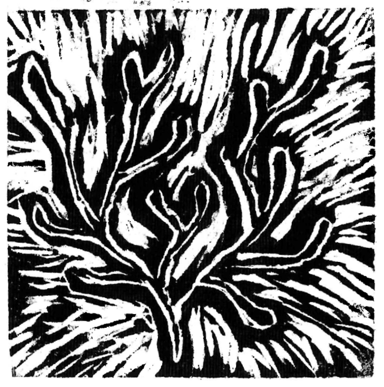

Resonancia colectiva | La identidad como proceso
La identidad surge en el espacio público por medio de la acción. Es performativa, y está inacabada.

La identidad surge en el espacio público por medio de la acción. Es performativa, y está inacabada.